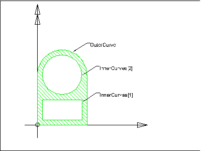

IfcArbitraryProfileDefWithVoids
Definition from IAI: The IfcArbitraryProfileDefWithVoids
defines an arbitrary closed two-dimensional profile with holes defined for the
use for the swept area solid. It is given by an outer boundary and inner
boundaries from with the solid the can be constructed.
Informal propositions: Illustration:  Position Parameter HISTORY: New entity in IFC
Release 2x.
ISSUE: See issues for changes made in IFC Release
2x.
Table: Parameter for arbitrary profile definition
The outer curve, defined at the supertype
IfcArbitraryClosedProfileDef and the inner curves are defined in the
same underlying coordinate system.
The OuterCurve attribute defines a two
dimensional closed bounded curve, the InnerCurves define a set of two
dimensional closed bounded curves.
EXPRESS specification:
|
| InnerCurves | : | Set of bounded curves, defining the inner boundaries of the arbitrary profile. |
| WR1 | : | The type of the profile shall be AREA, as it can only be involved in the definition of a swept area. |
| WR2 | : | All inner curves shall have the dimensionality of 2. |
| WR3 | : | None of the inner curves shall by of type IfcLine, as an IfcLine can not be a closed curve. |
| Name | Type | Referred through | Express-G | |
| IfcArbitraryClosedProfileDef | Entity |
|
Diagram 3 |
|